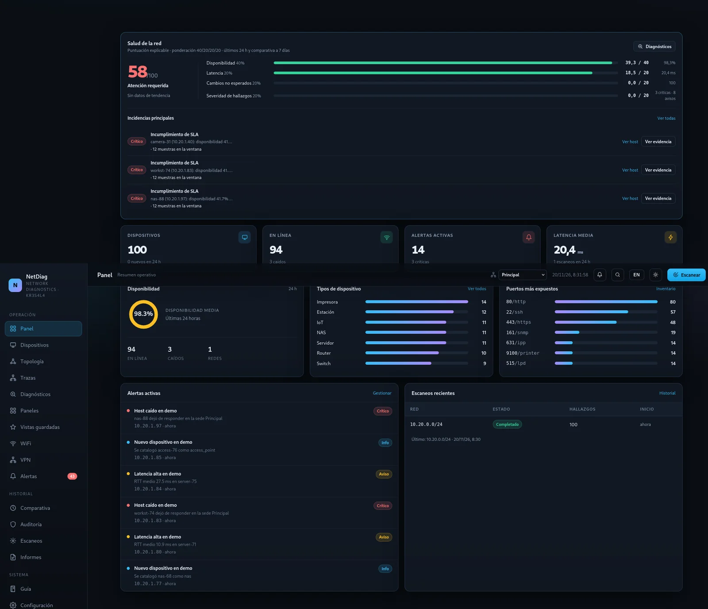
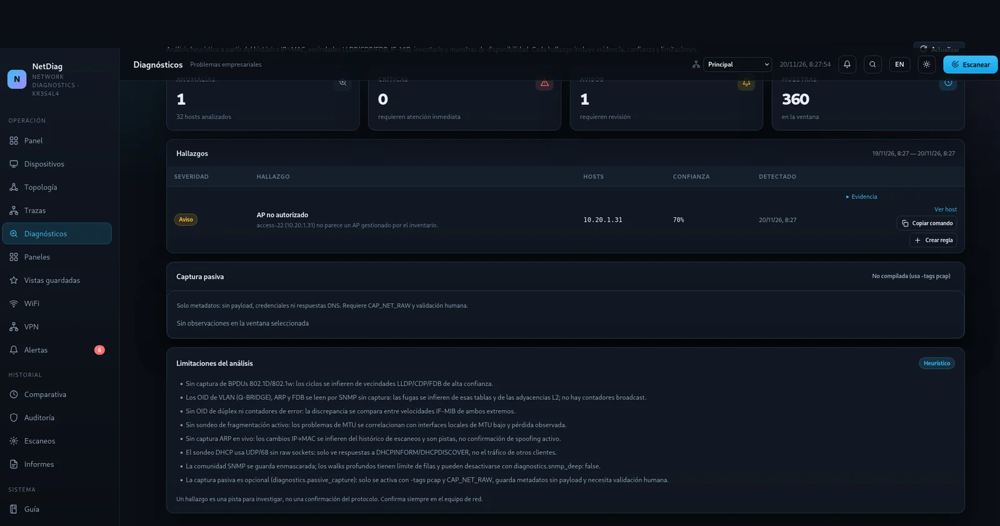
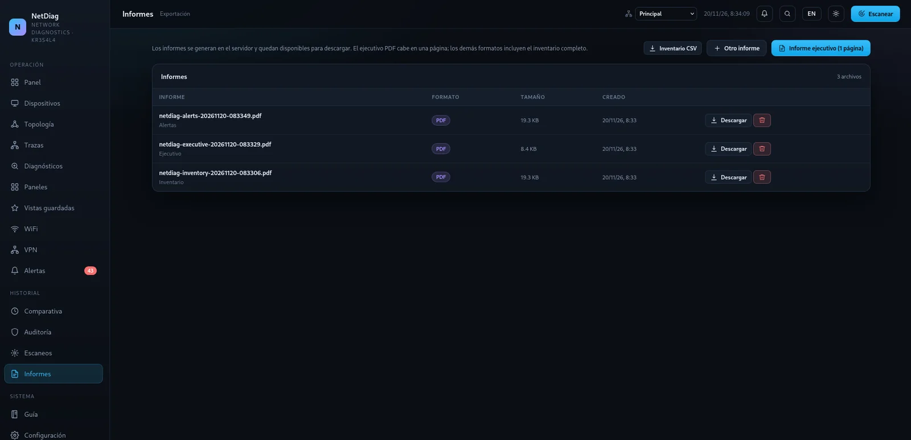
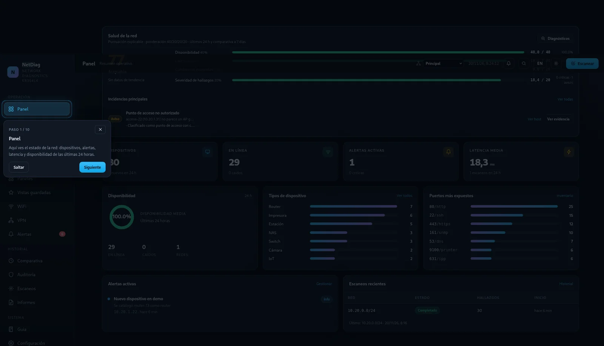

NetDiag
Inventario y diagnóstico de red en un binario. Sin telemetría, sin nube y sin pago.
← Volver al catálogo · Portafolio
Ficha del proyecto. Para ver el resto, vuelve al catálogo de proyectos.
Inventario y diagnóstico de red en un binario. Sin telemetría, sin nube y sin pago.
Escáner de red y monitor de inventario self-hosted. Un único binario Go con interfaz web en español e inglés. No necesita agentes, servicios en la nube ni dependencias en tiempo de ejecución. Guarda todo en SQLite, en tu máquina. Funciona offline.
La idea es simple: descubrir, identificar, almacenar, vigilar, alertar e informar. Está pensado para redes propias, laboratorios y entornos autorizados.
Es beta y se entrega «tal cual», sin garantías. Úsalo solo en redes propias o con autorización explícita del propietario. Tú eliges qué se escanea y respondes por ello.
Los diagnósticos infieren de tablas e históricos. Son pistas para investigar, no una confirmación protocolaria de un ataque. La captura pasiva es opcional y solo guarda metadatos.







Capturas con datos de ejemplo.
Necesitas Go 1.27 o superior. Para ARP activo, también libpcap-dev y gcc.
git clone https://github.com/kr3s4l4/netdiag.git
cd netdiag
make build
./bin/netdiag serve # http://127.0.0.1:8080En el primer acceso se crea la cuenta de administrador. Después se elige la sede, se añade la subred a monitorizar y se lanza el primer escaneo. El asistente de arranque puede omitirse.
La configuración vive en ~/.config/netdiag/config.yaml y los datos en ~/.local/share/netdiag.
No hay telemetría. El binario no informa de nada a ningún servidor. Tú decides qué se guarda y qué se comparte.
.ndc: un ZIP con manifiesto, ficheros originales y firma minisign. La firma se verifica en local y usa una clave distinta de la de release.NetDiag es software libre bajo AGPL-3.0 y gratuito. No hay cuenta online, pago, licencia online ni DRM. No hay ediciones de pago ni soporte formal. La única cuenta es la de administrador local que se crea al arrancar.
Puedes usar, estudiar, modificar y redistribuir el programa. Si lo distribuyes, conserva los avisos de copyright y entrega la AGPL. Si ejecutas una versión modificada y la ofreces a otros usuarios a través de una red, la sección 13 de la AGPL exige ofrecerles el código fuente correspondiente. No hay cláusula de telemetría ni restricción de uso competitivo.
El binario sabe leer un fichero de licencia firmado con Ed25519. La comprobación es local: no contacta con ningún servidor. Es una capacidad técnica, no una oferta comercial. No activa funciones premium, no bloquea escaneos ni informes y nunca borra datos.
Las contribuciones se aceptan bajo DCO, sin CLA. Los avisos de dependencias de terceros están en NOTICE y THIRD_PARTY_LICENSES.md.
La última release publicada es v1.5.2. Incluye binarios para amd64 y arm64, SHA256SUMS, SBOM CycloneDX, atestación de procedencia y firma minisign con la clave pública c98b13d8c8f73259. Los hashes se pueden comprobar antes de ejecutar nada.
No hay SLA ni soporte formal. Los errores y las preguntas técnicas van a GitHub Issues. Las preguntas generales, a GitHub Discussions. Las vulnerabilidades se reportan por el canal privado descrito en SECURITY.md.